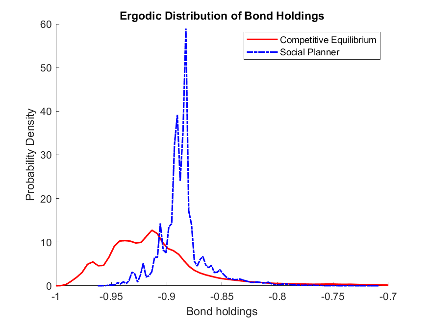
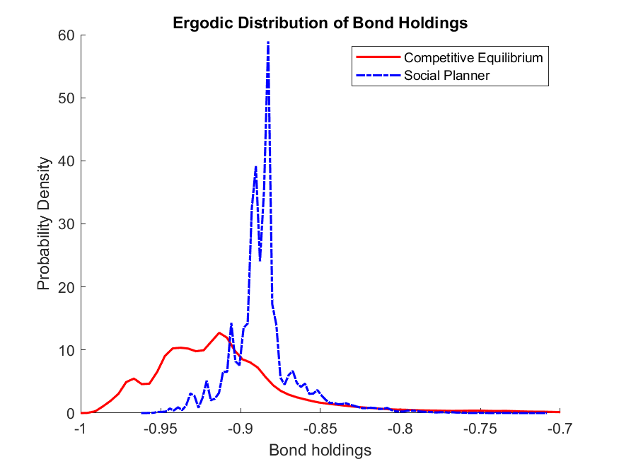

Bianchi (2011): Sudden Stops in Open Economies
The benchmark model in Bianchi (2011) provides an example in which the economic dynamics can be highly non-linear due to the presence of a borrowing constraint tied to a (good) price. We illustrate how to use the adaptive grid method with the toolbox to capture the non-linearity effectively. This example also introduces how to solve the model in a coarse and narrow grid of the state space, and then refine the state space to ensure it covers the ergodic set by reusing the compiled code.
The Model
Bianchi (2011) studies an incomplete-markets open economy model that can generate competitive equilibria featuring sudden stop episodes, resembling those experienced by many emerging economies. A sudden stop episode features a large output drop and current account reversals, which are at odds with the prediction of a standard incomplete-markets model with precautionary saving motives. A key feature for the model in Bianchi (2011) is to introduce feedback of the price of non-tradable goods to the borrowing constraint: a negative external shock that lowers the equilibrium price of non-tradable goods tightens the borrowing constraint and forces reducing the consumption of tradable goods, which further lowers the price of non-tradable goods. The competitive equilibrium is inefficient since agents do not take into account the effects of their consumption on the non-tradable price and the borrowing constraint. This leads to ex-ante over-borrowing and calls for policy interventions.
The borrowing constraint is occasionally binding in the equilibrium’s ergodic set, and the equilibrium policy and state transition functions are highly non-linear when the borrowing constraint binds. Therefore, a global and non-linear solution is essential to capture the model’s rich dynamics. We solve the competitive equilibrium of the benchmark model in Bianchi (2011), described below.
Small-open economy representative consumers derive utility from consumption of tradable goods \(c_t^T\) and of non-tradable goods \(c_t^N\) according to
where \(\omega, \eta\) are parameters. \(\beta\in(0,1)\) is the discount factor. \(\mathbb{E}\) is the expectation operator to integrate shocks below.
Borrowing is via a state non-contingent bond in tradable goods at a constant world interest \(r\). The endowments of tradable goods \(y_t^T\) and non-tradable goods \(y_t^N\) follow exogenous stochastic processes. The consumer faces the following sequential budget constraint
where \(b_{t+1}\) is the bond-holding determined at period \(t\). Tradable good is the numeraire and \(p_t^N\) is the equilibrium price of non-tradable goods, taken as given by consumers.
A key feature of the model is that the borrowing is subject to a borrowing constraint tied to the non-tradable good price as below
which says that the borrowing cannot exceed the sum of \(\kappa^N\) fraction of the value of non-tradable goods, plus \(\kappa^T\) fraction of the value of tradable goods, with parameter \(\kappa^N>0, \kappa^T>0\) determining the collaterability of the non-tradable and tradable endowments, respectively.
A sequential competitive equilibrium is stochastic sequences \(\{b_{t+1},c_t^T,c_t^N,c_t,\mu_t,\lambda_t,p_t^N\}_{t=0}^{\infty}\) such that
Consumers optimize:
where
Markets clear:
Notice that we have replaced the consumer’s constrained optimization problem with first order conditions and complementarity conditions, which allows us to describe the equilibrium as a system of equilibrium equations.
To input the model into the toolbox, we need to formulate the recursive system. The exogenous states are \(y_t^N,y_t^T\), the natural endogenous state is \(b_t\). A recursive competitive equilibrium is \(b'(y^N,y^T,b),c^T(y^N,y^T,b),c^N(y^N,y^T,b),c(y^N,y^T,b),\mu(y^N,y^T,b),\lambda(y^N,y^T,b),p^N(y^N,y^T,b)\) that satisfy the optimization and markets clearing conditions.
The gmod File
The recursive system can be solved using GDSGE with bianchi2011.gmod below
1% Toolbox options
2USE_ASG=1; USE_SPLINE=0;
3AsgMaxLevel = 10;
4AsgThreshold = 1e-4;
5
6% Parameters
7parameters r sigma eta kappaN kappaT omega beta;
8r = 0.04;
9sigma = 2;
10eta = 1/0.83 - 1;
11kappaN = 0.32;
12kappaT = 0.32;
13omega = 0.31;
14beta = 0.91;
15
16% States
17var_state b;
18bPts = 101;
19bMin=-0.5;
20bMax=0.0;
21b=linspace(bMin,bMax,bPts);
22
23% Shocks
24var_shock yT yN;
25yPts = 4;
26shock_num=16;
27
28yTEpsilonVar = 0.00219;
29yNEpsilonVar = 0.00167;
30rhoYT = 0.901;
31rhoYN = 0.225;
32
33[yTTrans,yT] = markovappr(rhoYT,yTEpsilonVar^0.5,1,yPts);
34[yNTrans,yN] = markovappr(rhoYN,yNEpsilonVar^0.5,1,yPts);
35
36shock_trans = kron(yNTrans,yTTrans);
37[yT,yN] = ndgrid(yT,yN);
38yT = exp(yT(:)');
39yN = exp(yN(:)');
40
41% Define the last-period problem
42var_policy_init dummy;
43inbound_init dummy -1.0 1.0;
44
45var_aux_init c lambda;
46model_init;
47 cT = yT + b*(1+r);
48 cN = yN;
49 c = (omega*cT^(-eta) + (1-omega)*cN^(-eta))^(-1/eta);
50 partial_c_partial_cT = (omega*cT^(-eta) + (1-omega)*cN^(-eta))^(-1/eta-1) * omega * cT^(-eta-1);
51 lambda = c^(-sigma)*partial_c_partial_cT;
52
53 equations;
54 0;
55 end;
56end;
57
58% Implicit state transition functions
59var_interp lambda_interp;
60initial lambda_interp lambda;
61lambda_interp = lambda;
62
63% Endogenous variables, bounds, and initial values
64var_policy nbNext mu cT pN;
65inbound nbNext 0.0 10.0;
66inbound mu 0.0 1.0;
67inbound cT 0.0 10.0;
68inbound pN 0.0 10.0;
69
70var_aux c lambda bNext;
71var_output bNext pN;
72
73model;
74 % Non tradable market clear
75 cN = yN;
76
77 % Transform variables
78 bNext = nbNext - (kappaN*pN*yN + kappaT*yT);
79 % Interp future values
80 lambdaFuture' = lambda_interp'(bNext);
81
82 % Calculate Euler residuals
83 c = (omega*cT^(-eta) + (1-omega)*cN^(-eta))^(-1/eta);
84 partial_c_partial_cT = (omega*cT^(-eta) + (1-omega)*cN^(-eta))^(-1/eta-1) * omega * cT^(-eta-1);
85 lambda = c^(-sigma)*partial_c_partial_cT;
86 euler_residual = 1 - beta*(1+r) * GDSGE_EXPECT{lambdaFuture'}/lambda - mu;
87
88 % Price consistent
89 price_consistency = pN - ((1-omega)/omega)*(cT/cN)^(eta+1);
90
91 % budget constraint
92 budget_residual = b*(1+r)+yT+pN*yN - (bNext+cT+pN*cN);
93
94 equations;
95 euler_residual;
96 mu*nbNext;
97 price_consistency;
98 budget_residual;
99 end;
100end;
101
102simulate;
103 num_periods = 1000;
104 num_samples = 100;
105 initial b 0.0
106 initial shock 1;
107 var_simu c pN;
108 b' = bNext;
109end;
Here are some comments on the implementation.
2USE_ASG=1; USE_SPLINE=0;
3AsgMaxLevel = 10;
4AsgThreshold = 1e-4;
These lines specify the option that the adaptive sparse grid (ASG) method uses for function approximations. The ASG method is based on Ma and Zabaras (2009), brought to economics by Brumm and Scheidegger (2017) and features sparsity for multi-dimensional problems and thus can accommodate models with high-dimension state space. In the current context with one dimension continuous state space, the method works to automatically refine the discretized grid in the region of state space featuring high nonlinearity. The method uses hat functions as the basis functions defined in a hierarchy structure. Option AsgMaxLevel specifies the the maximum level at which the refinement stops, and option AsgThreshold specifies the threshold below which the refinement stops. See more options for the adaptive sparse grid in Toolbox API.
41% Define the last-period problem
42var_policy_init dummy;
43inbound_init dummy -1.0 1.0;
44
45var_aux_init c lambda;
46model_init;
47 cT = yT + b*(1+r);
48 cN = yN;
49 c = (omega*cT^(-eta) + (1-omega)*cN^(-eta))^(-1/eta);
50 partial_c_partial_cT = (omega*cT^(-eta) + (1-omega)*cN^(-eta))^(-1/eta-1) * omega * cT^(-eta-1);
51 lambda = c^(-sigma)*partial_c_partial_cT;
52
53 equations;
54 0;
55 end;
56end;
These lines define the starting point of the time iteration, which is based on the solution to a last-period problem. In this model the last-period problem is actually trivial: it just specifies the marginal utility derived from consuming all endowments (of tradable and non-tradable) and bond holdings. We do not need to solve a system of equations for this, but we want to organize the calculations in a readable format. These lines demonstrate how such procedure can be done by defining a trivial model_init; block, which accepts a dummy as unknown, and returns variables needed in var_aux_init.
78 bNext = nbNext - (kappaN*pN*yN + kappaT*yT);
This line demonstrates how to transform the borrowing constraint tied to an endogenous asset price \(b_{t+1} \geq - (\kappa^N p_t^N y_t^N + \kappa^T y_t^T)\), into a boxed constraint. This is done by defining \(nb_{t+1}=b_{t+1} + (\kappa^N p_t^N y_t^N + \kappa^T y_t^T)\), and specifying a non-negative constraint for unknown \(nb_{t+1}\). In the evaluations of the equations, we transform \(nb_{t+1}\) back to \(b_{t+1}\) with the line defined above.
Results
Upload and compile the gmod file through the online compiler. We first run policy iterations in a narrower state space, then expand it to cover the ergodic set
>> options = struct;
shock_process = load('shock_process.mat');
options.shock_trans = shock_process.shock_trans;
options.yT = shock_process.yT;
options.yN = shock_process.yN;
options.MaxIter = 50;
IterRslt = iter_bianchi2011(options);
options.MaxIter = inf;
options.WarmUp = IterRslt;
options.SkipModelInit = 1;
options.bMin = -1.1;
options.bMax = 0.0;
options.b = [options.bMin,options.bMax];
IterRslt = iter_bianchi2011(options);
As shown above, the options specified in a structure can be passed into the iter file to overwrite existing parameters. (All parameters
with names CapitalUpperCaseOption can be overwritten without recompiling). We first load the exact discretized processes
used in Bianchi (2011). Make sure you have file
shock_process.mat ready.
MaxIter defines the maximum number of policy iterations before which
the procedure stops. Since we are just warming up on a coarse state space, let’s set it 50. The returned IterRslt is then passed to the iter file again
in a structure, in the field named WarmUp. This basically overwrites the starting point of the policy iteration with the solution obtained
in the previous iter call. Accordingly, option SkipModelInit is set to one to skip the model_init; block as it is not used (this step is optional but can be helpful in cases
where the last-period problem takes time to solve and is not guaranteed to find solutions in the expanded state space).
Finally, we overwrite the state space to enlarge the interval for b to \([-1.1,0.0]\) which ensures that it covers the ergodic set. This procedure should be done recursively: expanding the state space until it covers the ergodic set found in the simulations.
MATLAB displays:
Iter:10, Metric:0.0102642, maxF:8.66941e-09
Elapsed time is 0.462853 seconds.
...
Iter:77, Metric:4.31948e-07, maxF:9.36793e-09
Elapsed time is 1.616132 seconds.
We can now inspect the policy functions using following MATLAB commands:
>> asg_output = asg.construct_from_struct(IterRslt.asg_output_struct);
grids = asg_output.get_grids_info;
idx_bNext = 1;
idx_pN = 2;
for j=1:16
grid = grids{j};
lenGrid = length(grid);
bNext_fval{j} = asg_output.eval(j*ones(1,lenGrid),idx_bNext*ones(1,lenGrid),grid);
pN_fval{j} = asg_output.eval(j*ones(1,lenGrid),idx_pN*ones(1,lenGrid),grid);
end
figure;
subplot(2,1,1); hold on;
xy = sortrows([grids{1}',bNext_fval{1}']);
plot(xy(:,1),xy(:,2),'ro-');
xy = sortrows([grids{4}',bNext_fval{4}']);
plot(xy(:,1),xy(:,2),'kx-');
title('Policy functions for next period bond holding, $b''$','interpreter','latex','FontSize',12);
xlabel('Current bond holding, $b$','FontSize',12,'interpreter','latex');
subplot(2,1,2); hold on;
xy = sortrows([grids{1}',pN_fval{1}']);
plot(xy(:,1),xy(:,2),'ro-');
xy = sortrows([grids{4}',pN_fval{4}']);
plot(xy(:,1),xy(:,2),'kx-');
title('Policy functions for non-tradable goods price, $p^N$','interpreter','latex','FontSize',12);
xlabel('Current bond holding, $b$','FontSize',12,'interpreter','latex');
legend({'$y_t^T$ Lowest, $y_t^N$ Lowest','$y_t^T$ Highest, $y_t^N$ Lowest'},'Location','SouthEast','interpreter','latex','FontSize',12);
print('figures/policy_combined.png','-dpng');
This is a bit involved than previous examples since the ASG method returns solutions in a structure that allows solutions for each exogenous shock to be defined over different grids. So the above procedure essentially unpacks the grid and reconstructs the values of the policy functions (using asg_output.eval, where asg_output is the adaptive sparse grid approximation object constructed from the converged solution. The second argument in asg_output.eval (idx_bNext and idx_pN here) refers to the index of policy functions according the order declared in var_output). These codes generate the following figure:

As shown in the figure, the policy functions are highly nonlinear: when the borrowing constraint binds, the price of non-tradable goods declines sharply in the level of exist borrowing; future borrowing declines, instead of increasing, as the economy goes further in debt, implying current account reversals. If the borrowing constraint does not bind, then the price movement is much milder as we vary the level of existing debt, and current account reversals do not happen.
The markers on the policy functions indicate the grid points automatically placed by the adaptive-grid method, and show that the method adds more points to the state space where the policy and state transition functions become non-linear. Importantly, the method takes care that these non-linear regions can differ across exogenous states, as shown in the figure. This illustrates the effectiveness of the adaptive-grid method for this class of models, as these non-linear regions of state-space cannot be determined ex-ante, and require very dense exogenous grids or painful manual configurations.
We can also inspect the ergodic distribution of the endogenous state variable, bond holding, by calling in MATLAB
SimuRslt = simulate_bianchi2011(IterRslt);
figure; hold on;
histogram(SimuRslt.b(:,500:end),50,'Normalization','pdf');
[density,grid] = ksdensity(reshape(SimuRslt.b(:,500:end),1,[]));
plot(grid,density,'r-','LineWidth',2);
title('Histogram and Kernel Density of Bond Holdings','interpreter','latex','FontSize',12);
xlabel('Bond holdings, $b$','FontSize',12,'interpreter','latex');
ylabel('Probability density','interpreter','latex');
print('figures/histogram_b.png','-dpng');
which produces

This shows that the non-linear regions do exist in the ergodic set of the equilibrium and thus cannot be ignored, but due to precautionary motives, the frequency of the economy being in these regions cannot be determined ex-ante, highlighting the necessity of using a global solution method.
A final remark to be made here is that the toolbox by default resolves the equilibrium system at each time step of the simulation, minimizing the numerical error within a period. Alternatively, one can add the following line in the gmod file (recompilation needed) to switch to interpolating policy and state transition functions in the simulation.
SIMU_RESOLVE=0; SIMU_INTERP=1;
Directly interpolating the policy and state transition functions results in much faster speed for simulation. We plot the ergodic distribution obtained from the direct interpolation method below

As shown in the figure, for the current one-dimension model solved with the adaptive-grid method, the differences in simulations generated by the two methods are not visually distinguishable, highlighting the accuracy of the approximation method.
The Planner’s solution
The planner’s solution takes care of the effect of tradable/non-tradable consumption on the relative price. The planner’s solution differs from the competitive equilibrium by replacing the first order condition from
to
where
The planner’s problem can thus implemented by replacing Line 85
85 lambda = c^(-sigma)*partial_c_partial_cT;
to the following (see full gmod file for the planner’s problem bianchi2011_planner.gmod)
Psi = kappaN*pN*cN / cT * (1+eta);
lambda = c^(-sigma)*partial_c_partial_cT / (1-mu*Psi);
As highlighted in Bianchi (2011), since the planner takes into account the effect of cutting down tradable consumption on relative price and the borrowing constraint, it chooses to accumulate less debt compared to the competitive equilibrium. This can be seen below by comparing the policy functions for next-period bond and the ergodic distributions of bond holdings for the two economies.
 

{kind=link}
What’s Next?
This example illustrates the power of the adaptive grid method to deal with non-linear models. Since the method is designed based on sparse grid, it solves effectively non-linear models with high-dimensional state space. See example Cao, Evans, and Luo (2020) for a two-country Real Business Cycle model on the medium-run dynamics of exchange rate, in a model featuring portfolio choice, incomplete markets, and occasionally binding constraints, in which the dimension of the endogenous state space goes up to five.
Or you can directly proceed to Toolbox API.